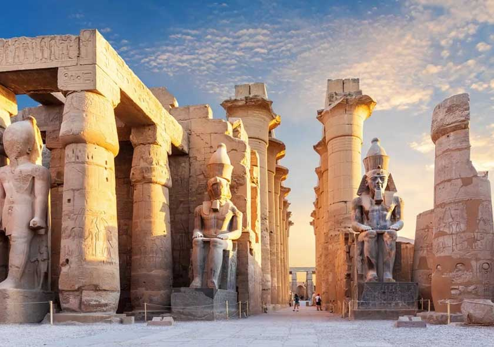

Piramidy w Gizie to jeden z siedmiu cudów świata. Być w Egipcie i nie zobaczyć piramid? Przecież to się w głowie nie mieści! Wprawdzie z Marsa Alam jest do Kairu dość daleko (około 750 kilometrów), ale wycieczka pod piramidy trwa niewiele ponad dobę. Poza piramidami w Gizie będziecie mogli też zobaczyć eksponaty w Muzuem Egipskim w Kairze, w tym złotą maskę Tutenchamona!
Wycieczka standardowo odbywa się autokarem z grupą ok 35 osób, ale ten sam program jest też do zrealizowania w wersji prywatnej dla mniejszych grup – między 4 a 8 osób, małym busem. Cena wycieczki wynosi wtedy 85$ od osoby . Wycieczka VIP busem odbywa się w niedzielę, wtorek i piątek. W cenę wycieczki VIP wliczona jest butelka wody oraz puszka napoju gazowanego lub szklanka soku w restauracji podczas obiadu.
Na wycieczkę do Kairu z Marsa Alam zostaniecie odebrani spod hotelu w którym jesteście zameldowani samochodem osobowym bądź busem (zależnie od ilości chętnych). Kierowca zawiezie Was do Hurghady, gdzie przesiądziecie się do innego busa / autokaru, którym udacie się do Kairu. Około 200km przed Kairem zatrzymacie się w zajeździe Zafarana, gdzie będzie można skorzystać z toalet, napić się kawy, czy coś zjeść.
Do Kairu dojeżdżacie około 8 rano. Pierwszym punktem wycieczki jest zwiedzanie Muzeum Egipskiego, gdzie znajduje się m.in. ponad 1700 obiektów z Grobowca Tutenchamona, w tym złota maska faraona.
Po Muzuem Egipskim udajecie się na obiad wliczony w cenę wycieczki. Obiad jest w restauracji w pobliżu piramid, w formie stołu szwedzkiego. Napoje podczas obiadu są dodatkowo płatne.
Po obiedzie udajecie się na zwiedzanie piramid w Gizie. Wielkie Piramidy, jeden z siedmiu cudów świata, włącznie z Wielką Piramidą Cheopsa, Średnią Piramidą Chephrena oraz Małą Piramidą Mykerinosa, a także Sfinksem.
W międzyczasie chętne osoby mogą skorzystać z rejsu po Nilu. Ta atrakcja jest dodatkowo płatna 10$ od osoby. Turyści, którzy nie korzystają z rejsu czekają na pozostałych w autokarze. Jeśli jesteście w Kairze bardzo wcześnie, gdy Muzuem jest jeszcze zamknięte, rejs po Nilu jest pierwszym punktem wycieczki.
Po zrealizowaniu całego programu wycieczki pora na powrót. Około północy jesteście w Hurghadzie, gdzie przesiadacie się do samochodu, który zabierze Was do hotelu w Marsa Alam. Na miejscu jesteście około drugiej – trzeciej w nocy.
Zwiedzania będzie się odbywać w towarzystwie polskojęzycznego przewodnika.
Wycieczka do Kairu z Marsa alam jest szczególnie polecana osobom, które podczas wakacji w Marsa Alam chciałyby zobaczyć piramidy oraz muzealne eksponaty ze Starożytnego Egiptu znajdujące się w Muzeum Egipskim. Wprawdzie jazda autobusem trwa około ośmiu – dziewięciu godzin w jedną stronę, jednak jeśli jeszcze nie mieliście okazji zobaczyć na żywo piramid, naprawdę warto się wybrać na wycieczkę do Kairu.
Wycieczka do Kairu jest całodniową wycieczką, podczas której zapewniony macie lunch. Dzień przed wyjazdem warto więc zgłosić w recepcji hotelu, że wybieracie się na wycieczkę i chcielibyście zamówić śniadanie na wynos tzw. breakfast box. Warto wiedzieć, że istnieje możliwość wejścia do wnętrza piramidy oraz Muzeum łodzi Khufu za dodatkową opłatą – zapraszamy do zapoznania się z cennikiem w artykule zwiedzanie piramid ceny
W programie wycieczki wciąż dostępne jest stare muzuem przy placu Tahrir w którym znajdują się między innymi skarby z grobu Tutenchamona, w tym złota maska. Nowe muzuem wciąż jest niedostępne do zwiedzania dla zorganizowanych grup.
Przyjmujemy płatność w dolarach, euro, funtach brytyjskich, funtach egipskich. Przeliczamy cenę wycieczki po aktualnym kursie i zaokrąglamy do pełnego euro, funta brytyjskiego bądź pięciu funtów egipskich. Nie akceptujemy płatności kartą. W wyjątkowych sytuacjach możemy zaakceptować płatność przelewem, choć preferujemy gotówkę.
Piramidy będziecie mieć na wyciągnięcie ręki w cenie wycieczki. Wejście do środka piramid jest dodatkowo płatne.
Na każdej wycieczce do Kairu w autokarze jest z Wami policjant. My, jako organizatorzy wyjazdu, jesteśmy zobowiązani uzyskać zezwolenie od policji turystycznej pozwalające na zorganizowanie wycieczki. Jeżeli pojawiają się jakiekolwiek sygnały alarmujące policja nie wydaje tego zezwolenia. Do tej pory zdarzyło się to zaledwie kilka razy, i za każdym razem było związane z pogodą.
Osoba, która po Was przyjeżdża, ma Wasz numer pokoju i powinna go podać. Jeżeli będziecie mieli problem ze zrozumieniem numeru pokoju, pokaże Wam ten numer w telefonie. Nie zawsze z hotelu odbierają Was osoby polskojęzyczne. Często są to kierowcy. Ale zwiedzanie Kairu zawsze odbywa się z polskojęzycznym przewodnikiem.p>
Z hoteli na terenie Marsa Alam odbieramy ok 22 a 23:30. Powrót z Kairu jest ok 2 – 3 w nocy. Po podaniu hotelu potwierdzimy dokładną godzinę wyjazdu.
Płatność jest podczas wycieczki, po wejściu do autokaru. Płaci się rezydentowi, który jedzie z Wami autokarem.
Przyjmujemy płatność w dolarach, euro, funtach brytyjskich, funtach egipskich. Przeliczamy cenę wycieczki po aktualnym kursie i zaokrąglamy do pełnego euro, funta brytyjskiego bądź pięciu funtów egipskich. Nie akceptujemy płatności kartą. W wyjątkowych sytuacjach możemy zaakceptować płatność przelewem, choć preferujemy gotówkę.
Poza pozycjami zawartymi w liście “Dodatkowo płatne” nie ma na wycieczce żadnych dodatkowych kosztów.